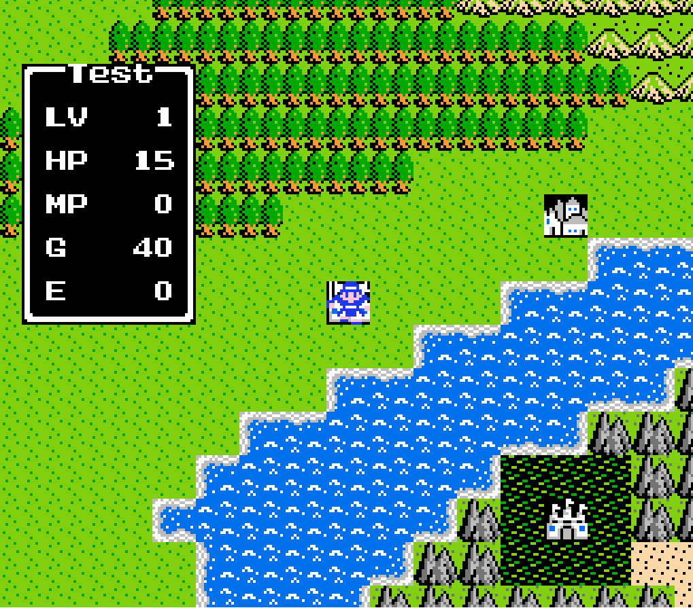
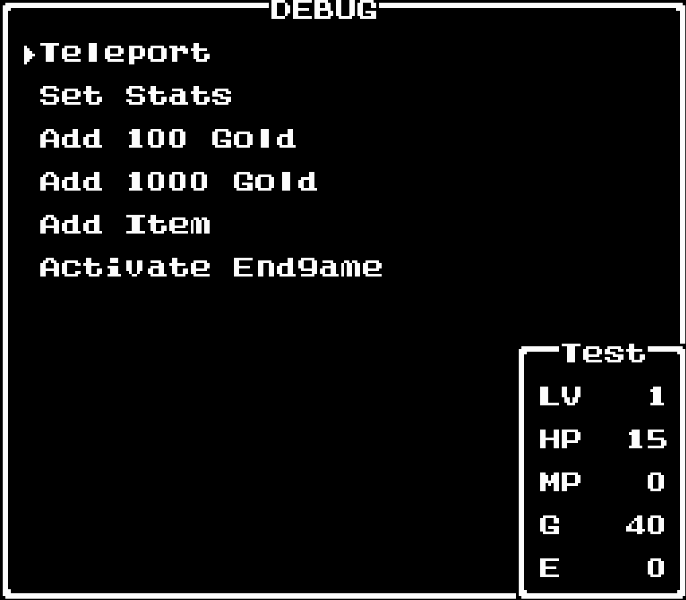

Dragon Warrior NES Clone
A faithful 1-to-1 clone of Dragon Warrior I for the NES, built in Godot for fun and practice.

Screenshots


About the Project
A near-complete recreation of Dragon Warrior I (Dragon Quest in Japan) built solo in Godot 4 over roughly a month. The only addition beyond the original is a debug menu with cheats and skips for development convenience.
The focus was on faithful reproduction: the turn-based battle system, overworld navigation, shop and inn interactions, save files, and the 8-bit visual effects (fade transitions, UI flicker) that define the NES era aesthetic. Playable directly in the browser with no download required.
Technical Highlights
- Battle system built on an MVC architecture. View updates the model through controller commands and the model returns a list of battle events for the view to consume. Designed to scale to more complex turn-based systems or a client-server setup
- 8-bit era shaders and UI effects: full-screen fadeout, text rendering, and period-accurate visual behavior
- Progress saving on WebGL via browser local storage
- Debug menu with cheats and skips not present in the original
Features
- Full recreation of overworld, towns, dungeons, shops, inns, and the complete quest structure
What I Learned
The MVC pattern for turn-based systems was the key engineering insight here: the view sends commands to the controller, the controller updates the model, and the model emits a flat list of battle events for the view to replay in sequence. This decoupling makes the system straightforward to extend and naturally supports a client-server split if needed. Writing 8-bit era shaders and UI code was a satisfying exercise in deliberate platform constraints.